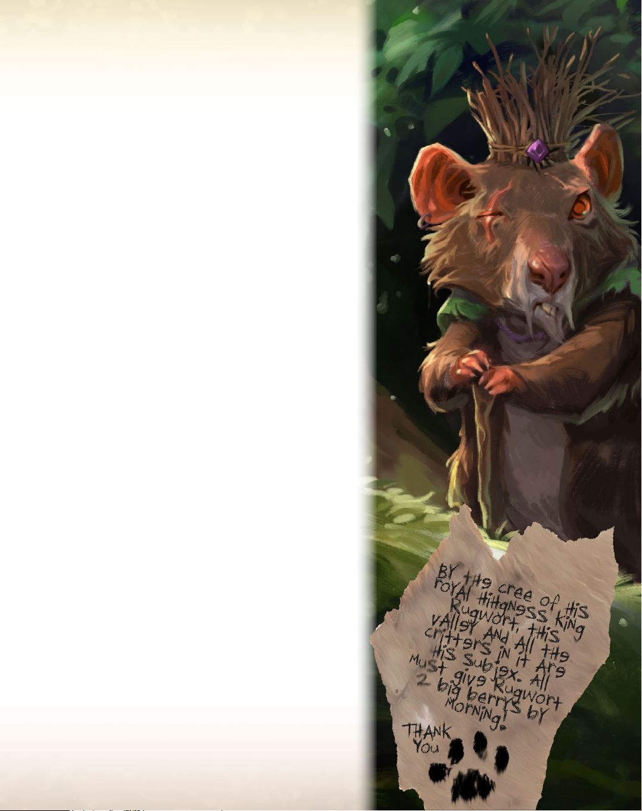

Эвердэлл
Правілы гульні
1
У чароўнай даліне Эвердэлл, ніжэй галін
высокіх дрэў, сярод блукаючых патокаў
ды імшыстых нізін, квітнее і разьвіваецца
цывілізацыя лясных істот. З тых часоў,
як знакаміты вандроўнік Корын Эвертэіл,
шмат годоў таму адкрыў нязьведанную даліну,
яе жыхары квітнелі пад пратэкцыяй
Магутнага і Вечнага Дрэва.
Ад Вечнай Мерзлаты да эпохі Звонкай Песьні
прайшло шмат год, але настаў час для засваеньня
новых тэрыторый і стварэньня новых гарадоў.
Вы будзеце лідарам групы істот, якія намераны
выканаць гэту задачу. Bы будзеце будаваць горад,
сустрэнеце поўных жыцьця персанажэй і паўдзель-
нічаеце ў разнастойных падзеях - гэта будзе напру-
жаны год! Ці будзе сьвяціць самае яркае сонца над
вашым горадам, перад тым як узыйдзе зімовая луна?
Вы будзеце зачарованы дзіўным сьветам Эвердэлл.
Як толькі вы апынецесь тут, вы не захочаце яго
пакідаць.
Пачынаўся Новы Год...
"Эвердэлл"
Блукая па лесе,
Зьбірая каменьне,
Зношваючысь на шляху,
Вядучам да нашага дома.
Укладка падлогі,
Падняцьце муроў,
Праца цягам доўгіх дзён,
Круглы год, ад зімы да восені.
І мы будзем гуляць там,
Дзе густая трава,
Пье з ракі. І ўбачым як зоры
выходзяць насустрач нам,
Калі ўсё што мне трэба рабіць-
Быць побач з табой
На вячэрнем ветры
Пад Вечным Дрэвам.
Фермер у полі,
Шахцёр у брудзе,
Кароль у сваім замке,
З ягадна-блакітнай крывёй,
Будынак школы ў дрэве,
Капліца ў крыніцы.
Мы побач адзін з адным
Ствараем нашу мару.
І мы ляжам там,
Дзе густая трава,
Пье з ракі. І ўбачым як зоры
выходзяць насустрач нам,
Калі ўсё што мне трэба рабіць-
Быць побач з табой
Пад пераменным лісьцем
Вечнага Дрэва.
2
3
Кампаненты гульні
1 Поле гульні
4 Тайлы Базавых Падзей
Жэтоны Ачкоў Перамогі (АП)
(10 3-ачковых, 20 1-ачковых)
(10 3-ачковых, 20 1-ачковых)
20 Жэтонаў 1 8-гранны Кубік
"Выкарыстана" (для гульні на аднаго)
4
128 Карт істот і будынкаў
11 Лясных Карт
16 Карт Асаблівых
Падзей
30 Ягад 30 Галін 25 Кр. смалы 20 Кам. галькі
1 Вечнае Дрэва
24 Працаўніка (па 6
на гульца)
на гульца)
1 Карта Перамогі
5
ПАДРЫХТОЎКА
1) Пакладзіце поле гульні на стол.
разьмясьціце Вечнае Дрэва ў
верхней частцы поля.
2) Разьмясьціце галінкі, свамлу, гальку і ягады
ў адпаведныя стосы ўздоўж берага ракі.
Разьмясьціце жэтоны Ачкоў Перамогі (АП)
і жэтоны "Выкарыстана" каля поля гульні.
3) Перамяшайце Лясныя карты і разьмясьціце
іх на Лясных палянах. Выкарыстоўвайце
3 карты для двух гульцоў і 4 карты
для трох ці чатырох гульцоў. Пакладзіце
застаўшыеся карты назад у скрынку.
4) Разьмясьціце 4 тайла Базавых Падзей
каля ракі, затым перамяшайце карты
Асаблівых Падзей і памясьціце 4 зь іх
на ніжніе галіны Вечнага Дрэва.
Адкладзіце застаўшыеся карты ў скрынку.
5) Перамяшайце асноўную калоду і выпад-
ковым чынам, разьмясьціце 8 картак тварам
угору на Лузе ў цэнтры поля гульні. Разьмя-
сьціце калоду пад Вечным Дрэвам.
6) Кожны гулец абірае колер і пачынае
з двума працаўнікамі абранага колеру.
Першы гулец цяне 5 карт з калоды, другі
гулец 6 карт, трэці - 7 карт,
чацьвёрты - 8 карт.
7) Кожны гулец разьмяшчае застаўшыхся
4 працаўнікоў на верхніх галінах
Вечнага Дрэва: па 1 на Вясну і Лета,
і 2 на Восень.
Самы сьціплы гулец ходзіць першым.
6
1
Тут разьмясьціцца
сброс карт, тварам
уніз.
Колькасьць рэсурсаў, якія мае
гулец падчас гульні -
не абмежавана. Калі якісьці
рэсурс скончваецца, яго
можна заменіць.
6
5 карт
Гулец 1 Гулец 2
6
6 карт
2
6
Гулец 3 Гулец 4
6
7 карт 8 карт
5
5
22
2
2
33
2
44
44
7
7
ЯК ГУЛЯЦЬ
Гульцы ходзяць па гадзіннай
стрэлцы. У свой ход вы можаце
зрабіць адно з наступных
дзеяньняў (любое, але адно).
Разьмясьціць працаўніка, ці
Разыграць карту, ці
Падрыхтавацца да сезона.
Разьмяшчэньне працаўніка
Працаўнікі неабходны вам для пашырэньня
і пасьпяховага разьвіцьця вашага гораду.
Вы будзеце разьмяшчаць іх на розных
мясьцінах Эвердэлла каб сабіраць рэсурсы,
цянуць карткі, удзельнічаць у падзеях,
ці, магчыма, адпраўляць іх у вандроўку.
Мясьціны для наведваньня уключаюць
Месцы базавых актыўнасьцяў
Лясныя месцы
месца можна выкарыстоўваць
толькі ў гульне на 4х. Вы ня можаце
разьмясьціць двух сваіх працаўнікоў
на адным Лясным месцы.
Прыклад: разьмяшчэньне
працаўніка на другім
месцы базавай актыўнасьці дае
гульцу дзьве галінкі, і карту
з калоды.
Існуюць два тыпы месцаў:
выключныя і агульныя (абазначаныя
адкрытай акружнасьцю). Толькі 1 працаўнік
можа наведаць выключнае месца. Некалькі
працаўнікоў, нават аднаго колеру, могуць
наведаць агульнае месца.
Выключнае Агульнае
Для наведваньня месца, разьмясьціце аднаго з
працаўнікоў на даступным сымбале
і адразу атрымайце пералічаныя рэсурсы,
ці выканайце актыўнасьць. Гэты працаўнік
затым разглядаецца закрэпленым на гэтым
месцы, пакуль гулец не забярэ яго назад
падчас Падрыхтоўкі да сезону.
8
Прыклад: Калі іншы
гулец разьмяшчае пра-
цаўніка на Паштовым
Адзяленьні, уладальнік
атрымлівае 1 ачко.
Карты Прызначэньня
Вы можаце разьмясьціць працаўніка на лю-
бой карце Прызначэньня ў сваім горадзе, ці
карце Прызначэньня іншага горада, з
сымбалем , у гэтым выпадку
ўладальнік Прызначэньня атрымлівае
1-ачковы жэтон з рэсурсаў.
Падзеі
Патрабуе каб у
вашым годадзе
былі Разьбяр па
дрэве і Капліца.
Патрабуе каб у вашым
горадзе былі 3 карты
Прызначэньня.
Вы можаце разьмясьціць 1 свайго працаўніка
на любой з застаўшыхся Базавых ці
Асаблівых Падзей. Каб атрымаць Падзею,
вы павінны выканаць усе пералічаныя
ўмовы Падзеі і аплаціць пералічаныя
рэсурсы падчас разьмяшчэньня працаўніка
на Падзее. Толькі адзін гулец атрымлівае
кожную канкрэтную Падзею. Каб разьмясь-
ціць працаўніка на Падзее, вы павінны
адпавядаць яе ўмовам.
Атрыманыя Падзеі разьмяшчаюцца побач з
вашым горадам для падліку ачкоў у канцы гульні.
Прытулак
Месца прытулку -
гэта агульнае
месца.
Колькасьць
працаўнікоў,
якія могуць быць разьмешчаны на ім - не
абмежавана, нават калі яны аднаго колеру.
Наведвая прытулак, вы можаце скінуць любую
колькасьць карт з рукі, і атрымаць 1 любы
рэсурс за кожныя 2 скінутыя карты.
Падарожжа
Толькі восеньню, вы можаце адправіць
працаўніка ў падарожжа. Вы павінны скінуць
столькі карт, колькі пералічана ачкоў на
выбраным месцы Падарожжа. Месцы на 5,
4, і 3 ачка - выключныя, а месца
на 2 ачка - агульнае. Разьмешчаны
працаўнік каштуе цяпер
пералічаную колькасьць
ачкоў у канцы гульні.
9
Разыграньне карты
Вы можаце разыграць адну карту. Каб
разыграць карту, вы павінны правесьці
аплату, згодна з пералічанымі ўмовамі,
у агульныя рэсурсы. Карты могуць быць
разыграны ці з карт Луга, ці са сваёй рукі.
Вы кладзеце карту перад сабой для фармі-
раваньня вашага гораду. Ёсьць два тыпы
карт у гульне: Істоты і Будынкі. Вы можаце
мець некалькі копій любой Агульнай карты
ў горадзе, але не болей адной копіі для
кожнай Выключнай карты.
Выможаце аплаціць абазначаны кошт у ягадах
каб разыграць карту Істоты, ці калі
пералічаны ў верхнім левым вугле карты
Істоты Будынак ёсьць у вашым горадзе,
вы можаце разыграць гэту Істоту
без аплаты кошту ў ягадах.
Важна: Калі разыграем Істоту без аплаты,
выкарыстоўвая адпаведны Будынак, кладзем
жэтон "Выкарыстана" на Будынак.
Кожны Будынак дазваляе разыграць
бясплатна толькі адну Істоту за гульню.
Патрабаваньні
Тэкст карты
Ачкі
Будынкі
Тып і імя карты
Тэкст карты
Ачкі
Істоты
Патрабаваньні
Тып і імя карты
ЦІ
10
Горад
У вашым горадзе ёсьць максімум 15 месцаў
для разыграньня карт. Кожная карта займае
адно зь іх. Прапануемае разьмяшчэньне -
3 рады па 5 карт у кожным. Карты Падзей
не ўлічваюцца ў гэтым абмежаваньні.
Тыпы карт
Карычневы Падарожнік: Спра-
цоўвае адзін раз, адразу як разы-
грана. Ніколі не спрацоўвае зноў.
Зялёная Вытворчасьць:
Спрацоўвае адзін раз, адразу як
разыграна, і адзін раз падчас
Падрыхтоўкі да сезону ў выпадку
вясны і восені.
Чырвонае Прызначэньне: Спра-
цоўвае, калі на ім разьмяшчаецца
працоўнік. Карты з могуць
быць наведаны апанентамі.
Блакітнае Кіраваньне: Дае вам
бонусы пасьля разыграньня асобых
тыпаў карт, і прапануе розныя
варыянты разыграньня карт
са скідкай.
Фіялетавы Росквіт: Каштуе базавыя
ачкі плюс пералічаныя ачкі пры
падліку ў канцы гульні.
Атрымай: вазьмі пералічаныя рэсурсы ці жэтоны ачкоў з агульных рэсурсаў.
Аплаці: пакладзі пералічаныя рэсурсы са сваёй рукі ў агульныя рэсурсы.
Жэтоны Жэтоны ачкоў Карта Галіна Смала Галька Ягада Любы рэсурс
ачкоў канца гульні
Прапануемае разьмяшчэньне
Заўсёды цянем карты з калоды, пакуль
спецыяльна не абазначана, што трэба
ўзяць карту з Луга.
Колькасьць карт у руцэ строга абмежава-
на 8ю картамі. У вас ня можа быць болей
за 8 карт у руцэ ў любы момант. Калі вы
цянеце карты, вы можаце цянуць толькі да
8мі ў руцэ, не болей. Калі вам патрэбна
аддаць карты апаненту, і ва ўсіх апанентаў
поўныя рукі, карты адпраўляюцца ў сброс.
Калі разыграецца карта з Луга, яна адразу
замяняецца новай картай з калоды. Калі
здольнасьць дазваляе гульцу цянуць
некалькі карт з Луга, спачатку бяруцца
ўсе патрэбныя, а пасьля замяняюцца.
Калі калода скончылась, перамяшайце
сброс і зрабіце яго новай калодай.
Цянем карты
11
Падрыхтоўка да сезона
Гульня пачынаецца позьней зімой
і скончваецца з набліжэньнем новай
зімы. Восень - апошняя Падрыхтоўка
да сезону, якую можна зьдзейсьніць
падчас гульні.
Зьдзейсьніць Падрыхтоўку да сезону
можна толькі пасьля разьмяшчэньня ўсіх
наяўных на дадзены момант працаўнікоў.
Калі вы зьдзейсьніваеце Падрыхтоўку
да сезону, толькі вы забяраеце назад
сваіх разьмешчаных працаўнікоў.
Вясной, вы атрымліваеце
1го новага працаўніка і акты-
віруюце ўсе зялёныя карты
Вытворчасьці вашага горада.
Летам, вы атрымліваеце
1го новага працаўніка.
Летам няма Вытворчасьці,
але зялёныя карткі ўсё
роўна актывуюцца калі
разыграюцца ў летнім сезоне.
Дадаткова, вы можаце
выцянуць дзьве карты з Луга,
калі рыхтуецесь да Лета.
Восенью, вы атрымліваеце
2х новых працаўнікоў і акты-
віруеце ўсе зялёныя карты
Вытворчасьці вашага горада.
12
Калі рыхтуецесь да наступнага сезона,
новыя працаўнікі з Вечнага Дрэва
далучаюцца да горада. Атрымайце
адпаведных працаўнікоў і актывіруйце
бонусы наступнага сезона.
13
Канец гульні
Калі вы больш ня можаце нічога зьдзейсьніць
(ці не жадаеце), вы скончылі гульню і
павінны прапускаць хады. Калі гульцы
прапускаюць, яны больш ня могуць
атрымліваць карты ці рэсурсы. Калі карты
ці рэсурсы павінны быць пераданы гульцу,
але ўсе астатнія гульцы ўжо прапускаюць -
адпаведныя рэсурсы ці карткі ідуць у сброс.
Гульня працягваецца пакуль кожны
гулец не завяршыць яе. У канцы гульні
падлічваюцца ачкі каб вызначыць
пераможцу.
Прасьцей за ўсё спачатку падлічыць
усе базавыя ачкі картак, а потым
дадаць ачкі жэтонаў, бонусы
фіялетавых карт Росквіту, ачкі
Падарожжа і Падзей.
Калі атрымалась нічыя, перамагае гулец
з большай колькасьцю Падзей. Калі ўсё яшчэ
нічыя - перамагае гулец з максімумам
застаўшыхся рэсурсаў.
Прыклад падліку (Старонка 14)
Базавыя ачкі карт: 22
Ачкі жэтонаў: 14
Ачкі з бонусаў карт Росквіту: 10 (3 з
Жонкі, 2 з Архітэктара, 5 з Караля)
Ачкі Падарожжа: 4
Падзеі: 12 (6 за Выканаўцу ў Рэзідэнцыі,
3 за Служэньне Нягоднікам, 3 за
Вялікі Тур)
Усяго: 62
14

15
У гульне на адного, вы супрацьстаіце
старому сварліваму грызуну Рагварту
і яго зграе хуліганістых, некантралюемых
пацукоў-дзікарэй. Ён будзе вяртацца ў
Эвердэлл тры гады запар, кожны раз
нася новы тытул брыдкасьці. Вам трэба
пераадолець яго подлыя трукі
і пазбавіць Эвердэлл ад яго раз і на
заўсёды!
Год першы: "Рагварт Нягоднік"
Абярыце колер для Рагварта
(звычайна чорны) і падрыхтуйце
гульню для дваіх гульцоў. Вы
пачынаеце з 5ю картамі, а Рагварт
бяз карт.
Вазьміце аднаго з працаўнікоў Рагварта
і разьмясьціце яго на верхняй левай Лясной
карце, блакуя яе. Разьмясьціце іншага пра-
цаўніка на месцы сбору 3 галін, блакуя яго.
Гуляйце як звычайга з наступнымі новымі
правіламі:
Кожны раз пасьля таго як вы разыграеце
карту, Рагварт разыграе карту. Калі вы
выкарысталі карту з Луга, спачатку замясь-
ціце яе новай. Каб разыграць карту Раг-
варта, кіньце 8-гранны кубік; нумар вызначае
якую карту з Луга Рагварт разьмясьціць у
сваім горадзе. Карты пранумарованы
ад 1 да 8, пачыная з верхняй левай як
1 і скончваючы правай ніжняй як 8.
У горадзе Рагварта, кладзіце карты ў стосы
па колерам, каб бачыць колькі карт
кожнага колеру ў яго ёсьць. Здольнасьці
карт і іх ачкі ня маюць значэньня.
Замясьціце карту Луга, пасьля таго
як разыгралі адну для Рагварта.
Пасьля таго як вы выканалі Падрыхтоўку
да сезона, Рагварт адразу
рыхтуецца да сезона, што ўключае
наступныя тры крокі:
1) Праверце ці дастаткова ў яго каляровых
карт у горадзе, каб выканаць нейкія
з 4х Базавых Падзей. Калі так, размясьціце
адпаведныя Падзеі ў яго горадзе.
2) Вазьміце новага працаўніка Рагварта і
разьмясьціце яго на першай #1 карце Луга
(#2 для Лета, і #3 ды #4 для Восені), такім
чынам у канцы гульні ён будзе мець
працаўнікоў на 4х верхніх картах Луга.
Вы больш ня можаце гуляць гэтымі картамі,
але Рагварт па ранейшаму можа.
3) Ссуньце яго працаўніка на наступную,
супраць гадзіннай стрэлкі, Лясную карту.
падчас Падрыхтоўкі да Вясны, перамясьціце
працаўніка Рагварта з месца з 3ма галінкамі
на месца з 2ма крышталямі смалы.
Летам, перамясьціце гэтага працаўніка
на месца з 1м каменьчыкам галькі.
А Восеньню, на месца з 1й ягадай і
1й картай.
Восеньню, перамясьціце працаўніка Рагварта
з 3й Лясной карты на 3-ачковае месца
Падарожжа.
Падлік ачкоў
Для Рагварта: 2 ачка за кожную карту
ў яго горадзе (3 ачка за кожную фіялетавую
карту Росквіту), 3 ачка за кожную Базавую
Падзею ў яго горадзе, 3 ачка за кожную
Асаблівую Падзею якую вы не атрымалі,
3 ачка за яго працаўніка ў Падарожжы, плюс
любыя жэтоны ачкоў якія вы аддавалі яму.
Гульня на аднаго

16
Год другі: "Рагварт Гнілы"
Тыя ж правілы, што й для першага
года, але:
Разьмясьціце працаўніка Рагварта на 4-ачковым
Падарожжы, замест 3-ачковага.
Рагварт атрымлівае 6 ачкоў за кожную
Асаблівую Падзею якую вы не атрымалі,
замест 3.
Год трэці: "Рагварт Гарэзлівы"
Тыя ж правілы, што й для другога
года, але:
Разьмясьціце працаўніка Рагварта на 5-ачковым
Падарожжы, замест 4-ачковага.
Падчас Восеньскай Падрыхтоўкі да сезона
Рагварта, ён выкрадае аднаго вашага
працаўніка! Не разьмяшчайце яго працаўніка
на месцы з адной ягадай і 1 картай,
замест гэтага ўдаліце аднаго з яго, і
аднаго з вашых працаўнікоў з гульні.
Цяпер у вас толькі 5 працаўнікоў для
апошняга сезона гульні.
Перамагіце яго ў трэцім годзе й барды
Эвердэлла уславяць ваш трыюмф!
Гістарычныя запісы а вашай перамозе
сахраняцца на ўсе часы!
Стары пацук Рагварт схаваецца,
пакінув Эвердэлл у пакоі... на некаторы час.
17
Указальнік
Карчмар: калі вы разыграеце Істоту, можаце
скінуць Карчмара каб паменьшыць кошт гэтай
Істоты на 3 ягады. Вы не атрымліваеце 3 яга-
ды. Гэта карта ня можа гуляць у камбінацыі
са здольнасьцямі іншых карт, уключая Карчму,
любыя Лясныя карты, якія дазваляюць разы-
граць карту, ці карты накшталт Падзямельля.
Судзьдзя: Калі разыграеце карту
Істоты ці Будынака, можаце замяніць
1 рэсурс на 1 іншы, які маеце.
Напрыклад, калі карта каштуе 2 ягады,
вы можаце замест заплаціць 1 ягаду і
1 галінку.
Кароль: У канцы гульні, каштуе 1 ачко
за кожную Базавую Падзею, і 2 ачка за
кожную Асаблівую Падзею ў горадзе.
Крот-Шахцёр: Калі разыграеце яго пад
час Вытворчасьці, вы можаце скапіраваць
1 любую карту Вытворчасьці з гораду апа-
нента. Фактычна, Крот-Шахцёр на момант
замяняе гэту карту, такім чынам, калі капі-
руеце Ўніверсальную Краму і ў апанента
ёсьць яшчэ і Ферма - вы атрымаеце 2 ягады.
У гульне на аднаго: Вы можаце скапіраваць
любую карту Вытворчасьці ў Рагварта.
Манах: Калі разыграеце яго падчас Вытвор-
часьці, вы можаце аддасі да 2 ягад апаненту,
каб атрымаць па 2 ачка за кожную. Дадаткова,
адчыняе другую кельлю Манастыра.
Вандроўны гандляр: Калі разыграеце яго
падчас Вытворчасьці, вы можаце замяніць
да 2х вашых рэсурсаў на 2 іншых. Абмен пра-
водзіцца з агульнымі рэсурсамі, не з гульцамі.
Паштовы голуб: Калі разыграецца, раскры-
вае 2 карты з калоды. Вы можаце адразу бяс-
платна разыграць адну зь іх, каштоўнасьцю
да 3х ачкоў. Другая ідзе ў сброс. Калі
разыграецца ў гульне на аднаго, з розы-
грашам бясплатнай карты - лічыцца, што
разыграны 2 карты, таму Рагварт таксама
разыграе 2 карты наступным ходам.
Істоты
Архітэктар: У канцы гульні, каштуе 1 ачко
за кожны застаўшыся крышталік смалы ці
каменьчык галькі, да 6 ачкоў максімум.
Бард: Збросьце да 5 карт з рукі, каб атры-
маць 1 ачко за кожную карту.
Жаба з Баржы: Падчас разыграньня і
падчас Вытворчасьці, атрымайце 2 галінкі
за кожную Ферму ў вашым горадзе.
Дворнік: Падчас разыграньня і падчас
Вытворчасьці, актывуе адну карту
Вытворчасьці ў вашым горадзе. Мы
ведаем пра што вы падумалі, і ня раім.
Да часу, калі бедалага зловіць свой
хвост, ён пражжэ дзірку прама ў вашым
стале. Не прасіце яго гэта рабіць.
Доктар: Падчас разыграньня і падчас
Вытворчасьці, вы можаце заплаціць да 3х
ягад, каб атрымаць 1 ачко за кожную.
Дурань: Дурань разыграецца на пусты слот
у горадзе апанента. Брыдка, праўда? У гуль-
не на аднаго: Рагварт можа сыграць Дурня
ў ваш горад. А калі вы разыграеце Дурня,
скіньце яго і адну карту з горада Рагварта.
Гісторык: Вазьміце карту з калоды пасьля
таго як разыгралі Істоту ці Будынак. То бок,
калі маеце Гісторыка ў горадзе, пасьля
разыграньня карты, вы цянеце новую.
Муж: Дзеліць месца з жонкай. То бок ра-
зам, яны займаюць адно месца ў горадзе.
Калі ў вашым горадзе ёсьць Ферма і пара
Муж з Жонкай - гэта карта дае вам 1 любы
рэсурс падчас разыграньня і падчас
Вытворчасьці. Можа дзяліць месца толькі
з адной Жонкай.
18
Каралева: Калі разьмяшчаеце тут працаўніка,
можаце разыграць бясплатна любую карту
з рукі ці Луга, каштоўнасьцю да 3 ачкоў.
Гэта датычыцца толькі базавых ачкоў карты,
не ўлічваючы бонусныя ачкі.
Лясьнік: Калі разыграеце, перамясьціце 1 з разь-
мешчаных працаўнікоў на новае месца, згодна са
звычайнымі правіламі разьмяшчэньня працаўніка.
Акрамя, адчыняе другую камеру Падзямельля.
Пастух: Калі разыграеце, атрымайце 3 ягады.
Акрамя, атрымайце 1 ачко за кожны жэтон
ачкоў на вашай Капліцы.
Лавачнік: Атрымлівайце 1 ягаду, пасьля
таго як разыграеце Істоту ў ваш горад.
Але не за гэтага Лавачніка.
Настаўнік: Падчас разыграньня і падчас
Вытворчасьці, выцяніце 2 карты. Пакіньце
1 сабе, а другую аддайце апаненту.
Магільшчык: Калі разыграеце, скіньце
3 карты Луга, замяніце іх новымі, вазьміце
адну карту Луга ў руку.
Акрамя, адчыняе другую частку Могілак.
Вандроўнік: Калі разыграеце, выцяніце 3
карты. Не займае месца ў вашым горадзе.
Жонка: Дзеліць месца з Мужам. То бок
разам, яны займаюць адно месца ў горадзе.
У канцы гульні, каштуе 3 ачка, калі ідзе
ў пары з Мужам. Можа дзяліць месца толькі
з адным Мужам.
Разьбяр: Падчас разыграньня і падчас Выт-
ворчасьці, вы можаце заплаціць да 3х галі-
нак, каб атрымаць 1 ачко за кожную.

19
Будынкі
Замак: У канцы гульні, каштуе 1 ачко за
кожны Звычайны Будынак у вашым горадзе.
Могілкі: Калі разьмяшчаеце тут працаўніка,
паглядзіце 4 карты з калоды ці сбросу,
разыграйце 1 бясплатна, а астатнія сбросьце.
Ваш працаўнік застаецца тут перманентна.
На Могілках могуць быць разьмешчаны ня
болей 2 працаўнікоў, каб адчыніць месца для
другога, патрэбен Магільшчык.
Капліца: Калі разьмяшчаеце тут працаўніка,
памясьціце 1 жэтон ачкоў на Капліцу, цяніце
2 карты за кожны жэтон ачкоў на Капліцы.
Вежа з Гадзіньнікам: Калі разыграеце,
памясьціце сюды 3 жэтона ачкоў. Перад
тым як вярнуць сваіх працаўнікоў падчас
Падрыхтоўкі да сезона, удацліце 1 жэтон
ачкоў з Вежы і актывіруйце адно з Базавых
ці Лясных месцаў, дзе разьмешчаны ваш
працаўнік. Калі на Вежы з Гадзіньнікам
у канцы гульні застаюцца жэтоны ачкоў -
яны ўлічваюцца пры падліке ачкоў.
Суд: Атрымайце 1 галінку, 1 кр. смалы,
ці 1 кам. галькі, кожны раз калі разыграеце
Будынак у ваш горад, але не за гэты Будынак
Суда.
Пад'ёмны Кран: Калі разыграеце Будынак,
сбросьце Пад'ёмны Кран з вашага горада,
каб паменьшыць кошт новага Будынку на 3
любых рэсурса. Вы не атрымліваеце 3 рэ-
сурса. Кран ня можа быць зкамбінаваны ні з
якой картай (ні са здольнасьцю Карчмы, ні з
Ляснымі картамі, якія дазваляюць разыграць
карту, ні з картамі накшталт Падзямельля).
Падзямельле: Калі разыграеце Будынак
ці Істоту, можаце памясьціць Істоту з
вашага горада пад Падзямельлем, каб
паменьшыць кошт новай карты на 3 любых
рэсурса. Вы не атрымліваеце 3 рэсурса.
Істота, памешчаная ў Падзямельле, больш
ня лічыцца часткай вашага гораду і не
прынясе ачкоў у канцы гульні. Падзямельле
ня можа быць зкамбінавана ні з якой картай
(ні са здольнасьцю Карчмы, ні з Ляснымі
картамі, якія дазваляюць разыграць карту,
ні з Пад'ёмным Кранам ці Карчмаром). Пад-
зямельле можа мець толькі да 2 вязьняў, каб
адчыніць другую камеру, патрэбен Лясьнік.
Вечнае Дрэва: У канцы гульні, каштуе 1 ачко
за кожную фіялетавую карту Росквіту ў вашым
горадзе, у тым ліку за сябе. Акрамя, дае
бясплатна 1 любую Істоту.
Кірмаш: Падчас разыграньня і падчас
Вытворчасьці, выцяніце 2 карты.
Ферма: Падчас разыграньня і падчас
Вытворчасьці, атрымайце 1 ягаду.
Універсальная Крама: Падчас разыграньня і
падчас Вытворчасьці, атрымайце 1 ягаду ці 2
ягады, калі ў горадзе ёсьць Ферма (ня 2 ягады
за кожную Ферму).
Карчма: Калі разьмяшчаеце тут працаўніка,
разыграйце Істоту ці Будынак з Луга з паменьша-
ным на 3 любыя рэсурсы коштам. Вы не атрымлі-
ваеце 3 рэсурса. Вы атрымлівае 1 жэтон ачкоў,
калі апанент разьмяшчае працаўніка ў вашай
Карчме. У гульне на аднаго: вы можаце наведаць
Карчму Рагварта, аддаўшы яму 1 жэтон ачкоў.
Назіральны Пункт: Калі разьмяшчаеце тут пра-
цаўніка, скапіруйце 1 Базавае Лясное месца, нават
калі на ім разьмешчаны адзін з вашых працаўнікоў.
Шахта: Падчас разыграньня і падчас
Вытворчасьці, атрымайце 1 каменьчык галькі.
Манастыр: Калі разьмяшчаеце тут працаўніка,
аддайце 2 любых рэсурса апаненту, затым
атрымайце 4 жэтона ачкоў. Працаўнік застаецца
ў Манастыры перманентна. У Манастыры можа
быць разьмешчана да 2 працаўнікоў, каб
адчыніць другую кельлю, патрэбен Манах.
20
Палац: У канцы гульні, каштуе 1 ачко за
кожны Асаблівы Будынак у вашым горадзе,
уключая самаго сябе.
Пошта: Калі разьмяшчаеце тут працаўніка,
аддайце апаненту 2 карты са сваёй рукі,
скіньце столькі карт з рукі, сколькі хочаце,
цяніце карты з калоды да ліміта рукі.
Калі апанент наведвае вашу Пошту, вы
атрымліваеце 1 жэтон ачкоў.
У гульне на аднаго: вы можаце наведаць
Пошту ў горадзе Рагварта і ён атрымае
1 жэтон ачкоў.
Завод па ачышчэньню смалы: Падчас разыгрань-
ня і падчас Вытворчасьці, атрымайце 1 кр. смалы.
Руіны: Калі разыграеце, скіньце Будынак з ваша-
га горада і разьмясьціце на яго месцы гэту карту,
атрымайце назад пералічаны кошт скасаванага
Будынку ў рэсурсах. Акрамя, выцяніце 2 карты.
Школа: У канцы гульні, каштуе 1 ачко за
кожную Звычайную Істоту ў вашым горадзе.
Сховішча: Падчас разыграньня і падчас
Вытворчасьці, вазьміце з агульных рэсурсаў і
пакладзіце на гэту карту ці 3 галінкі, 2 кр.
смалы і 1 кам. галькі, ці 2 ягады. Каб сабраць
рэсурсы з карты, на ёй трэба разьмясьціць
працаўніка.
Тэатр: У канцы гульні, каштуе 1 ачко за
кожную Асаблівую Істоту ў вашым горадзе.
Галінкавая Баржа: Падчас разыграньня і
падчас Вытворчасьці, атрымайце 2 галінкі.
Універсітэт: Калі разьмяшчаеце тут
працаўніка, скіньце 1 Будынак ці Істоту з
вашага гораду і атрымайце назад пералічаны
кошт гэтай карты ў рэсурсах, дадаткова,
атрымайце 1 любы рэсурс і 1 жэтон ачкоў.
Калі вы скідваеце карту з разьмешчаным на
ёй перманентна працаўніком, перамясьціце
яго на карту Ўніверсітэту (вы не атрымлі-
ваеце гэтага працаўніка назад).
21
Сказ пра стаячыя камяні
Са слоў Поэ Легендарнага Казачніка
Даўным-даўно, далёка-далёка ў землях
Гільдзіна, малады мыш пільна глядзеў на
далёкія горы, гадаючы, што там за імі. Яго
жыццё складалась з цяжкасьцей і мітусьні,
як і ў шмат якіх істот у гэтыя цёмныя часы.
Навокал было цяжка знайсьці хоць кроплю
мёду ці шматочак ягады дурніц, бо ўся дасту-
пная правізія была выкарыстана ў Зьмяінай
Вайне, калі сьмелыя істоты сабраліся,
каб прагнаць зьмей з Паўночных Пустэч.
Тут, сярод беднаты і занядбанасьці сядзеў мыш,
рухомы марамі і надзеей. Корын Эвертэіл,
было яго імя. Яго бацька, бравы ваяка, згубіў
жыцьцё на вайне. Маці адышла хутка пасьля
навін пра сьмерць бацькі, пакінуўшы Корына
сіратой на цёмных вуліцах партовага горада
Штармавой Вярбы.
Шматлікімі былі яго прыгоды, і шмат разоў
жыцьцё яго вісела на валаску, цягам неверагод-
ных год яго маладосьці. Але кемлівасьць, жале-
зная воля і прадбачлівасьць дапамагалі яму ісьці
наперад. Ён не забываўся на мары пра лепшыя
землі за далёкімі гарамі. Ён ведаў, што такое
падарожжа можа загубіць яго жыцьцё, але
для яго не было будучыні ў Штармавой Вярбе.
Прыйшоў час.
Са сваіх нешматлікіх сяброў, ён змог пераканаць
трох падарожнічаць зь ім. Халоднай Парасткавай
раніцай, яны ўсе разам адправілісь шукаць землі,
у існаваньні якіх не былі ўпэўнены.
Шмат гісторый было складзена пра доўгую
вандроўку праз пустыню Марных Дзюн, і праз
Шпіля-Грэбневыя горы. Гэта была прыгода
22
Над гульнёй працавалі
Game Design
James A. Wilson
Illustration
Andrew Bosley
Game and Creative Development
Dann May
Brenna Noonan
James A. Wilson
Art Direction & Graphic Design
Dann May
Additional Graphics & Layout
Cody Jones
Marketing
Brenna Noonan
Production Management
Cody Jones
Executive Production
Dan Yarrington
Playtesters
Clarissa Wilson, Jacob Parker,
Nathan Wilson, Andrew &
Jordana Osborne, Justin Schaffer,
Michael Mindes, Seth Jaffee, Joel
Eddy, Allen Chang, Cody Jones,
Chris McMullen, Michael Fox, and
Andrew Bosley
Published by
Starling Games
Visit us online at Starling.Games
поўная пакут, якая цягнулась дзевяць месяцаў і
каштавала жыцьцё дарагому сябру Корына. Але
калі ніць надзеі, што вяла іх, вытанчылася, на 19
дзень Надзеяназіраньня, вандроўнікі дасягнулі
вяршыні і са зьдзіўленьнем убачылі тое, што так
шукалі.
Сонца прабіла цёмныя хмары, якія так
доўга ціснулі сваёй панурасьцю, і засіяла
над велічнай сьветлазялёнай далінай ўнізе.
Гэта была несапсаваная шнарамі вайны зямля,
некранутая спусташэньнем і прагнасьцю.
Пасьля тыдняў дасьледваньня даліны, Корын
з сябрамі пасялілісь у каранёў дрэва,
стаўшага праз час манумэнтам надзеі,
якое мы завем Вечнае Дрэва. Ён даў даліне імя -
Эвердэлл, і вымавіў дабраславеньне па-над ёй.
Ледзь не адразу пасьля ўсталяваньня месца адпа-
чынку, Корын заняўся ўзьвядзеньнем манумэнту,
каб увекавечыць і ніколе не забыцца на іх пада-
рожжа, прыведшае іх у гэта сакральнае месца.
Яны паставілі дзевяць белых камянёў, кожны з якіх
прадстаўляў месяц іх падарожжа. У гэтых камянях
яны высеклі свае ўспаміны, надзеі і мары, і наканец,
выклік для ўсіх нас, хто зараз насалоджваецца
мірам і камфортам нашага ўлюбёнага каралеўства.
Гэта словы Корына Эвертэіла, высечаные ў
камне, каб мы ніколі не забывалі:
Няма смутку занадта чорнага для надзеі.
Нават поўнач саступае месца раніцы.
Пражывайце ярка кожны дзень.
Будзьце праўдзівымі і гучным.
А цяпер ідзіце, ідзіце па сьвеце, і дазвольце
вашаму жыцьцю, як стаячаму камню, заахвочваць
і натхняць іншых, цягам шматлікіх сезонаў.